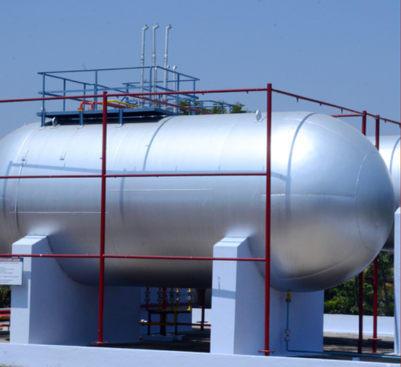

Aqsa Enterprises is one of the group concerns of Thenpandiyan Transport, Namakkal and a leading parallel marketer of LPG in Tamilnadu. The promoters of the company are renowned Bulk LPG Fleet operators for PSU Oil companies since 1985 and one of the largest bulk LPG transporters in South India. With its excellent quality, unmatched service, dedicated logistic support and competitive price, Aqsa Enterprises has been catering to the needs of Domestic, Commercial and Industrial segments with fullest customer satisfaction through its authorized distributors throughout Tamilnadu. With a long term product supply agreement with LPG Importer M/s.Indian Oil Petronas Pvt Ltd, a joint venture of M/s.Indian Oil Corporation and M/s.Petronas of Malaysian company, Aqsa Enterprises can ensure an uninterrupted supply of LPG to meet the needs of customers. Aqsa Enterprises provides not only good quality and quantity of LPG but also a dedicated service in delivery of cylinders to the consumers.
Aqsa enterprises is having state of the art own bottling facilities at Coimbatore and Namakkal with OISD 169 standard and extending toll filling assistance to Hindustan Petroleum Corporation Ltd, a PSU company of Govt of India from 2017 and Total Gaz (Total Oil India Private Ltd), an MNC company from 2010. The promoters are also operating Indian Oil Petronas Private Limited (IPPL) owned Auto LPG Dispensing Stations in Chennai, Perambur, Kanchipuram, Madurai, Dindigul, Pollachi, Karnataka and West Bengal under the brand name of “Propel”. One of the sister concerns is extending Annual Maintenance Contract (AMC) for more than 100 Auto LPG Dispensing stations, owned by Indian Oil Corporation Ltd in Tamilnadu, Karnataka and Kerala.
With the extensive usage of IPPL’s import terminal at Ennore, Chennai, four filling plants, fleet of dedicated delivery vehicles and 100+ strong distributors, we are able to serve our customers promptly. With the said facilities, Aqsa enterprises ensures uninterrupted supply of LPG cylinders throughout Tamilnadu. These facilities are regularly upgraded to meet the ever growing needs. Aqsa enterprises is now one of the leading LPG player with operations in almost all districts of Tamilnadu
By sourcing 100% of requirement from IPPL, Aqsa enterprises ensures that it eceives top quality LPG around the year with assured availability.
A dedicated fleet of bulk tankers from Thenpandiyan Transport and cylinder trucks are readily available to assure timely supplies to our customers. As a commitment towards better customer service, we have implemented Vehicle Tracking System (VTS) on our bulk tankers and cylinder trucks to get real-time information on product movement.
The 100+ distributor network of Aqsa enterprises makes sure timely delivery of cylinders to industrial, commercial and domestic customers.
Propane is lighter hydrocarbon with only three Carbon atoms in straight chain. This enables a proper mixing with air/oxygen and controlled burning to give the complete combustion. In case of liquid fuels improper air-fuel mixing and heavier hydrocarbons result in carbon deposition and low burner efficiency.
As compared to Liquid fuels industries have been able to get 10 to 15% better burner efficiency with propane.
Propane has almost 10 to 15% higher calorific value than any liquid fuel. This enables Propane to deliver maximum heat output per kg of fuel burnt than any other Liquid fuel.
Clean result in almost nil carbon deposit on the heat transfer equipment. Low excess air requirement reduces the energy loss through flue gas. Both these point account for 7 to 5% improvement in overall efficiency of the furnace/ Heat transfer equipment.
Propane has almost Nil sulfur as compared to 4% in Furnace oil and 1 to 2% in LDO. Use of Propane increase life of burner and furnance lining. Avoids use of long chimneys. Environmentally Propane is a green fuel.
In case of liquid fuel turn down ratio of 1:3 is achievable; in case of propane the achievable turndown ratio is as high as 1:8. This improves temperature control and better fuel efficiency.
Due to reduced requirement of pumping and heating in case of Propane, Operation and Maintenance cost of propane system is almost Nil.
Unlike liquid fuels, Propane comes with consistent quality for 365 days in a year, This improves productivity of plant.
High vapor and Lower boiling point enable propane to deliver more matural vapors than LPG hence Vaporizer is not required in most cases. E.g. From ONE 10 MT Storage Tank at 15.deg.C & 50% Tank Level PROPANE : 120 kg/hr of Natural Vapor are possible. Saving in Vaporization cost of Rs. 650 to 800/MT
Propane has 2 to 3% higher calorific value which accounts for better fuel efficiency over LPG and can result in savings of Rs. 250 to 270 per MT in fuel cost.
Propane has low boiling point and higher volatility due to which its condensation temperatures are sub atmospheric. In case of LPG or butane the condensation temperature at 1 kg/cm2ranges between 5 deg c to 20 deg C. Any such condensation is a potential hazard. Also it may cause process stoppage or interruption.
Propane comes with its pure form without any particulate, metal or unsaturated hydrocarbon contamination. This assures a customer longer equipment life and cleaner burning.